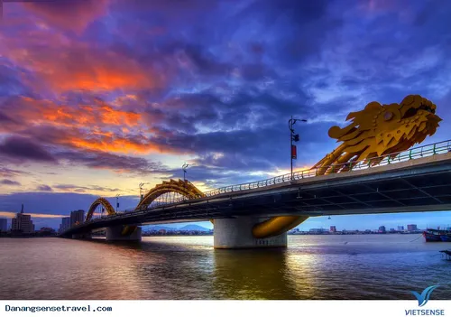

Ảnh toàn cảnh Đà Nẵng trên cao.
Các địa điểm du lịch nổi tiếng của Đà Nẵng
1. Bãi Biển Mỹ Khê
Bãi biển Mỹ Khê được mệnh danh là một trong những bãi biển quyến rũ nhất hành tinh nhờ bờ cát trắng mịn, biển xanh và sóng êm dịu. Đây là địa điểm lý tưởng để tắm biển, ngắm bình minh và tham gia các hoạt động thể thao nước. Không chỉ hấp dẫn khách du lịch bơi làn nước trong xanh, bãi cát êm đềm hay những bóng dừa rợp mát, Mỹ Khê còn được đánh giá là bãi biển sạch nhất Việt Nam. Vẻ đẹp mê hoặc của biển Mỹ Khê và sự thân thiện, mến khách của con người Đà Nẵng đã giúp cho địa điểm này ghi được nhiều điểm cộng lớn và trở nên vô vùng ấn tượng trong mắt khách du lịch.

Du khách có thể đến biển Mỹ Khê để du lịch vào nhiều thời điểm trong năm, tuy nhiên khoảng thời gian tháng 4 tới tháng 9 dương lịch, vẫn là khoảng thời gian đẹp nhất. lúc này nắng nhẹ nhàng và chan hòa, biển lại dịu êm, vô cùng thích hợp để nghỉ dưỡng hoặc tham gia các hoạt động ở ngoài trời. Với hệ thống dịch vụ phát triển, Mỹ Khê luôn là điểm dừng chân không thể bỏ lỡ khi đến Đà Nẵng.
2. Bán Đảo Sơn Trà
Bán Đảo Sơn Trà có biệt danh " Nàng Tiên Xanh" nơi đây rộng đến 3.439 hecta- sở hữu khí hậu quanh năm mát mẻ và hệ sinh thái, động thực vật đa dạng bậc nhất Đà nẵng. Bán đảo Sơn Trà được ví như "lá phổi xanh" của Đà Nẵng với hệ sinh thái rừng nguyên sinh phong phú. Nơi đây có chùa Linh Ứng, tượng Phật Bà Quan Âm cao nhất Việt Nam và đỉnh Bàn Cờ với tầm nhìn bao quát toàn thành phố. Bán đảo Sơn Trà Đà Nẵng là kho báu của thiên nhiên và lịch sử, với những điểm đến không chỉ đẹp về cảnh quan mà còn giàu về giá trị văn hóa. Thiên nhiên nơi đây nổi tiêng hoang sơ và thơ mộng, từ đỉnh Bàn Cờ, Bãi Đá Đen, Mũi Nghê, Bãi Tiên Sa, Bãi Bụt cho đến cây Đa Ngàn Năm Tuổi. Đây đều là những địa điểm xuất sắc ngoài mong đợi, đáng cân nhắc.

Du khách có thể khám phá thiên nhiên, ngắm voọc chà vá chân nâu - loài linh trưởng quý hiếm, hoặc trải nghiệm cung đường ven biển tuyệt đẹp.

3. Cầu Rồng
Cầu Rồng là biểu tượng kiến trúc hiện đại của Đà Nẵng với hình dáng con rồng vươn ra biển Đông. Vào tối thứ 7 và chủ nhật, cầu có trình diễn phun lửa - phun nước thu hút đông đảo du khách.
Khi lên đèn, cây cầu trở nên rực rỡ và tạo nên khung cảnh lung linh bên sông Hàn.
4. Cầu Tình Yêu và Tượng Cá Chép Hóa Rồng
Cầu Tình Yêu là những cây cầu được xây dựng như biểu tượng của tình yêu và hạnh phúc lứa đôi, thường là cầu đi bộ với kiến trúc đẹp mắt, không gian lãng mạn. Trên cầu thường trang trí bằng đèn, hoa, các biểu tượng trái tim hoặc ổ khóa tình yêu, nơi các cặp đôi đến để ghi dấu kỷ niệm, chụp ảnh, hoặc thể hiện lời hứa gắn bó bền lâu. Cầu Tình Yêu không chỉ mang ý nghĩa văn hóa và phong thủy mà còn trở thành điểm đến du lịch hấp dẫn. Một số cầu nổi tiếng trên thế giới bao gồm Cầu Tình Yêu Đà Nẵng ở Việt Nam, Pont des Arts ở Paris (Pháp) và Cầu Namsan ở Seoul (Hàn Quốc).

5. Ngũ Hành Sơn
Quần thể Ngũ Hành Sơn gồm 5 ngọn núi đá vôi mang tên Kim - Mộc - Thủy - Hỏa - Thổ. Mỗi ngọn núi mang trong mình một vẻ đẹp riêng, kết hợp hài hòa giữa thiên nhiên hùng vĩ và chiều sâu tâm linh. Những vách đá sừng sững, hang dộng kỳ vĩ, đền chùa rêu phong cổ kính,... tạo nên khung cảnh vừa linh thiêng vừa lãng mạn, khiến du khách không khỏi trầm trồ. Nơi đây nổi tiếng với các hang động kỳ ảo, chùa chiền linh thiêng và làng đá mỹ nghệ Non Nước. Du khách có thể leo lên đỉnh Thủy Sơn để ngắm toàn cảnh biển Đà Nẵng.

Nhờ địa thế cao ráo và thảm thực vật đa tầng, thời tiết tại đây luôn dịu mát, lí tưởng để tản bộ ngắm cảnh hoặc tìm về những khoảnh khắc lắng đọng. Đừng quên dừng chân tại làng Điêu Khắc Đá Non Nước - làng nghề hơn 400 năm tuổi, nơi lưu giữ tinh hoa chạm trổ đá mỹ nghệ, góp phần làm nên dấu ấn riêng cho văn hóa Đà Nẵng.